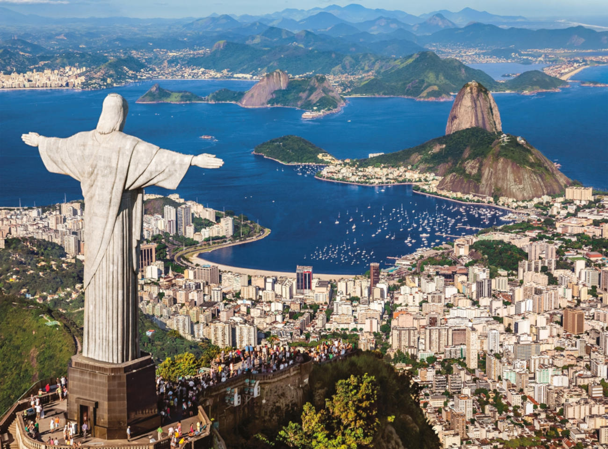

A Cidade Maravilhosa
Os pontos turísticos do Rio de Janeiro estão entre os lugares que todo mundo deveria visitar ao menos uma vez na vida. Se você está montando um roteiro para a sua viagem à Cidade Maravilhosa, pode ser interessante conferir as dicas que separamos a seguir, com informações sobre clima, praias, passeios, transporte, e muito mais. Não deixe de conferir também o nosso guia do Rio de Janeiro, com tudo para você planejar uma super viagem à capital carioca!